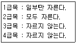
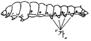
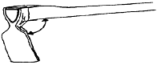
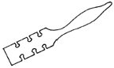

산림기능사 (2004-10-10 기출문제)
1과목: 조림 및 육림기술
1. 소나무를 상목(上木)으로 하였을 때 가장 적당한 하목용 수목은?
- 상수리나무, 오리나무
- 전나무, 떡갈나무
- 리기다소나무, 물푸레나무
- 느티나무, 단풍나무
(정답률: 79%)

2. 산벌작업 중 식생의 발생준비를 위한 작업은?
- 예비벌
- 하종벌
- 후벌
- 종벌
(정답률: 77%)
3. 포플러를 식재한 후 6~7년 된 나무일 때, 가장 적당한 가지치기 작업의 정도는 얼마인가?
- 나무 높이의 1/3 정도
- 나무 높이의 1/2 정도
- 나무 높이의 8 ~ 10m 정도
- 전 수간의 2/3 정도
(정답률: 79%)
4. 다음 중 묘목 식재 방법의 설명으로 틀린 것은?
- 구덩이를 팔 때 유기질이 많은 흙을 별도로 모은다.
- 식재 지점의 땅 표면에서 나온 지피물(풀 또는 가지 등)은 구덩이 밑에 넣는다.
- 묘목의 뿌리를 구덩이 속에 넣을 때 뿌리를 고루 펴서 굽어지는 일이 없도록 한다.
- 흙이 70% 가량 채워지면 묘목의 끝쪽을 쥐고 약간 위로 올리면서 뿌리를 자연스럽게 편다.
(정답률: 81%)
5. 산림 내 가지치기 작업의 주된 목적은 무엇인가?
- 우량목재 생산
- 중간수입 목적
- 각종위해 방지
- 연료공급
(정답률: 87%)
6. 다음 수종 중 고산수종은 어느 것인가?
- 감나무
- 가문비나무
- 아카시아나무
- 상수리나무
(정답률: 80%)
7. 다음 중 소나무에 주로 이용되는 접목법은 무엇인가?
- 절접법
- 박접법
- 할접법
- 설접법
(정답률: 78%)
8. 다음 중 회양목의 종자 채집 시기로 적당한 것은?
- 6월 중· 하순경
- 7월 중· 하순경
- 8월 중· 하순경
- 9월 중· 하순경
(정답률: 71%)
9. 다음 중 파종후의 작업 관리 중 삼나무 묘목의 뿌리 끊기 작업 시기로 적합한 것은?
- 6월 중순
- 7월 중순
- 8월 중순
- 9월 중순
(정답률: 65%)
10. 다음 중에서 속당 본수(묶음별 그루수)가 10본인 것은?
- 잣나무
- 오리나무류
- 자작나무
- 포플러류
(정답률: 61%)
11. 채종 직후 노천매장을 하는 종자가 아닌 것은?
- 소나무, 해송
- 단풍나무, 들메나무
- 잣나무, 은행나무
- 호두나무, 가래나무
(정답률: 67%)
12. 다음 중 왜림의 특징이 아닌 것은?
- 맹아로 갱신된다.
- 벌기가 길다.
- 수고가 낮다.
- 땔감 생산용으로 알맞다.
(정답률: 86%)
13. 다음 중 모수작업의 모수 설명이 가장 잘못된 것은?
- 바람의 저항이 강할 것
- 결실 연령에 도달할 것
- 유전적 형질이 좋은 나무일 것
- 음수 수종일 것
(정답률: 91%)
14. 종자 채집시기와 수종이 알맞게 짝지어진 것은?
- 2월 - 소나무
- 4월 - 섬잣나무
- 6월 - 떡느릅나무
- 9월 - 회양목
(정답률: 64%)
15. 다음 중 발아율이 90%, 순량률이 70%인 종자의 효율은?
- 20 %
- 63 %
- 80 %
- 96%
(정답률: 90%)
16. 다음과 같은 작업을 실시하는 간벌의 종류는 무엇인가?

- A종간벌
- B종간벌
- C종간벌
- E종간벌
(정답률: 44%)
17. 다음 중 대면적의 임분이 일시에 벌채되어 동령림으로 구성되는 작업종은 무엇인가?
- 개벌작업
- 산벌작업
- 택벌작업
- 모수작업
(정답률: 82%)
18. 다음 중 무육작업의 순서로서 바르게 나타낸 것은?
- 풀베기 - 덩굴치기 - 제벌 - 가지치기 - 간벌
- 풀베기 - 덩굴치기 - 가지치기 - 제벌 - 간벌
- 풀베기 - 덩굴치기 - 가지치기 - 간벌 - 제벌
- 풀베기 - 가지치기 - 덩굴치기 - 간벌 - 제벌
(정답률: 57%)
19. 다음 중 가식에 대한 설명 중 틀린 것은?
- 가식할 장소는 배수가 잘 되고 습기가 있는 곳을 선정하되 과습지는 피할 것.
- 가식은 대부분 점상으로 한다.
- 가식 시 묘목의 끝이 가을에는 남쪽으로 향하도록 한다.
- 가식 시 묘목의 끝이 봄에는 북쪽으로 향하도록 한다.
(정답률: 87%)
20. 다음 중 묘령을 표시한 것으로 파종상에서 2년, 그 뒤판갈이상에서 1년을 지낸 3년생 묘목은?
- 1 - 0묘
- 1 - 1묘
- 1 - 1 - 1묘
- 2 - 1묘
(정답률: 91%)
21. 다음 중 조림 수종으로 적합하지 않은 항목은?
- 생장이 빠르고 줄기의 재적 생장이 큰 수종
- 가지가 굵고 줄기가 곧은 수종
- 목재의 이용가치가 높은 수종
- 바람, 눈, 건조, 병해충에 저항력이 큰 수종
(정답률: 80%)
22. 다음 중 천연림 보육작업에 사용하지 않은 작업도구는?
- 소형기계톱
- 소형 천공기
- 무육톱
- 무육낫
(정답률: 77%)
23. 다음 중 은행나무, 잣나무, 백합나무, 벚나무, 느티나무, 단풍나무류 등의 발아 촉진법으로 가장 적당한 것은?
- 장기간 노천매장을 한다.
- 씨뿌리기 한 달 전에 노천매장을 한다.
- 보호 저장을 한다.
- 습적법으로 한다.
(정답률: 59%)
24. 수풀의 작업종 중에서 어미나무 작업에 의해 갱신되는 임분은 어떤 형태인가?
- 복층림
- 천연림
- 동령림
- 혼효림
(정답률: 67%)
25. 다음 중 발근이 비교적 잘되는 수종은 무엇인가?
- 전나무
- 개나리
- 가문비나무
- 삼나무
(정답률: 77%)
2과목: 산림보호
26. 삼림에 발생된 산불 중 방화로 보는 산불은 어느 경우 인가?
- 모닥불의 부주의
- 제탄설비의 불완전
- 고압 송전선의 누전
- 쥐불의 연소 또는 기우 등 미신
(정답률: 65%)
27. 식물병원진균 중 불완전 균류에 대한 설명 중 옳은 것은?
- 자낭 속에 자낭포자를 8개 갖고 있다.
- 유성세대(有性世代)로 알려져 있는 균류이다.
- 무성세대(無性世代)만으로 분류된 균류이다.
- 버섯종류를 총칭한다.
(정답률: 76%)
28. 주로 5~20년생에 많이 발생하며 20년생 이상 된 큰 나무에도 피해를 주는 수병은?
- 소나무 모잘록병
- 잣나무 털녹병
- 오동나무 탄저병
- 오리나무 갈색무늬병
(정답률: 55%)
29. 밤나무 흰가루병을 방제하는 방법으로 옳지 않은 것은?
- 가을에 낙엽과 병든 가지를 제거하여 불태운다.
- 묘포의 환경이 너무 습하지 않도록 주의한다.
- 봄 새눈이 나오기 전에 수화황제 등의 약제를 뿌린다.
- 한 여름 고온 시 석회황합제를 살포한다.
(정답률: 69%)
30. 잣나무 털녹병의 중간 기주는?
- 참나무
- 송이풀
- 낙엽송
- 들국화
(정답률: 76%)
31. 임목에 들쥐 및 짐승류의 피해가 가장 심한 시기는?
- 5~7월
- 8~9월
- 10~11월
- 12~3월
(정답률: 58%)
32. 다음은 나비목 유충의 모식도이다. 「가」의 이름은 무엇인가?

- 머리
- 다리
- 복지
- 기문
(정답률: 66%)
33. 대추나무빗자루병의 병원균은 무엇인가?
- 바이러스
- 세균
- 파이토플라스마
- 진균
(정답률: 88%)
34. 다음 중 잎을 가해하지 않는 해충은?
- 솔나방
- 오리나무잎벌레
- 흰불나방
- 소나무좀
(정답률: 78%)
35. 다음의 산림 해충 방제 방법 중 생물적 방제법에 속하지 않는 것은?
- 병원 미생물의 증식 이용
- 천적 곤충의 보호 이용
- 식충 조류의 보호 이용
- 혼효림 조성 및 내충성 수종 선정
(정답률: 83%)
36. 해충을 방제하기 위하여 수목에 잠복소를 설치하였다가 해충이 활동하기 전에 모아서 소각하는 방법을 ( )방제라고 한다. ( )안에 적합한 내용은?
- 생물적 방제
- 육림학적 방제
- 화학적 방제
- 기계적 방제
(정답률: 66%)
37. 살충제 중에서 소화중독제인 것은?
- 니코틴제
- 클로로피크린
- 나프탈렌
- 비산납
(정답률: 43%)
38. 해충에 대한 발생량 예찰에 대한 설명 중 틀린 것은?
- 깍지벌레와 같은 고착성 해충의 밀도표시는 가지의 면적을 단위로 한다.
- 해충의 발생예찰은 발생시기와 발생량의 예찰을 주목 적으로 방제수단의 강구에 필요하다.
- 해충의 분포는 한 나무 내에서의 상하, 또는 방위별 분포보다 임목간의 변이가 크다.
- 땅속의 해충, 솔잎혹파리 유충의 밀도는 면적 단위이다.
(정답률: 61%)
39. 유제(乳劑)는 약제를 용제(溶劑)에 녹여 계면활성제를 유화제로 첨가하여 만든 농약이다. 유제의 장점이 아닌 것은?
- 포장, 우송, 보관이 쉽고, 비용이 싸다.
- 수화제에 비하여 약액조제가 편리하다.
- 다른 제형(劑型)보다 약효가 우수하다.
- 야채류에는 수화제에 비하여 오염이 적다.
(정답률: 63%)
40. 내화성이 강한 수종으로 짝지어 있지 않는 것은?
- 은행나무, 굴거리나무
- 삼나무, 녹나무
- 잎갈나무, 가중나무
- 피나무, 황벽나무
(정답률: 55%)
3과목: 임업기계일반
41. 다음 중 유령림 무육작업에 사용되는 도구로서 부적당한 것은?
- 톱
- 소형기계톱
- 낫
- 전정가위
(정답률: 65%)
42. 가솔린 엔진의 특성으로 부적합한 것은?
- 기화기가 있다.
- 연료분사 밸브가 있다.
- 플러그가 있다.
- 가솔린을 사용한다.
(정답률: 65%)
43. Stihl 028AV에서 AV란 무슨 뜻인가?
- 기계모델명
- 기계회사명
- 전자식 점화장치
- 진동 예방장치 부착
(정답률: 73%)
44. 벌목 조제 작업 시 사고율이 가장 높은 몸의 부분은?
- 머리
- 손가락
- 다리
- 몸통
(정답률: 77%)
45. 예불기의 톱 회전 방향은?
- 시계 방향
- 시계 반대 방향
- 방향이 일정하지 않다.
- 작업자 중심방향
(정답률: 85%)
46. 기계톱 등 2 행정 기관에 연료 주입 시 오일 주입을 먼저 하고 다음에 연료 주입을 하는 이유는?
- 오일 혼합량이 많아지는 것을 막기 위하여
- 오일 주입을 잊어 엔진이 마모되는 것을 막기 위하여
- 오일통에 오물이 들어가지 않도록 하기 위하여
- 연료 소비량을 줄이기 위하여
(정답률: 80%)
47. 벌목 작업 시 2인 1조로 2개 팀이 작업을 하고 있다. 각 작업팀 간의 최소 안전거리로 가장 적합한 것은?
- 벌도목 수고의 1배 이상
- 벌도목 수고의 2배 이상
- 벌도목 수고의 3배 이상
- 벌도목 수고의 4배 이상
(정답률: 87%)
48. 체인을 갈 때 가장 적합한 방법은?
- 줄질을 적게 자주한다.
- 줄질을 한 번에 많이 한다.
- 줄질은 작업 완료 후 실내에서 한다.
- 체인은 수리공장에서 간다.
(정답률: 71%)
49. 1PS는 몇 kW인가?
- 0.37kW
- 0.70kW
- 0.73kW
- 0.75kW
(정답률: 55%)
50. 임목 벌도작업에서 수구의 각도는?
- 10~20°
- 30~45°
- 50~65°
- 75~85°
(정답률: 73%)
51. 기계톱의 오일펌프가 고장나 오일을 품어주지 못하면 어떤 현상이 나타나는가?
- 안내판과 체인 마모가 높아진다.
- 엔진의 내부가 쉽게 마모된다.
- 체인이 작동되지 않는다.
- 엔진이 과열되어 화재 위험이 높다.
(정답률: 67%)
52. 기계톱체인은 몇 개의 부품으로 구성되어 있는가?
- 4
- 5
- 6
- 8
(정답률: 53%)
53. 괭이날과 괭이자루와의 각도는 얼마인가?

- 70°
- 80°
- 85°
- 90°
(정답률: 70%)
54. 2 행정 기관의 특성을 열거한 것으로 옳은 것은?
- 작동 시 흡입기간이 길고 기동이 용이하며, 배기음이 낮다.
- 구조상 오일펌프가 필요하다.
- 윤활 방식상 휘발유와 오일 소비가 적다.
- 구조상 구조가 간단하며 조정이 용이하고 무게가 가볍다.
(정답률: 76%)
55. 다음 그림의 도구는 무슨 용도로 쓰이는가?

- 톱날갈기
- 톱날의 각도측정
- 톱니 젓힘
- 톱니 꼭지선 조정
(정답률: 74%)
56. 무육 도구의 힘을 크게 하는 방법으로 알맞는 것은?
- 도구는 가벼울수록 힘을 크게 낼 수 있다.
- 도구의 자루는 짧을수록 큰 힘을 낼 수 있다.
- 도구날의 끝각도가 적당히 클수록 나무가 잘 잘라진다.
- 도구를 내려치는 속도와 도구의 힘과는 관계없다.
(정답률: 86%)
57. 다음 중 내연기관에 속하지 않는 것은?
- 디젤기관
- 가솔린기관
- 로켓기관
- 증기기관
(정답률: 83%)
58. 다음 중 벌목작업 도구가 아닌 것은?
- 지렛대
- 밀게
- 사피
- 이리톱
(정답률: 59%)
59. 기계톱 연료에 대한 설명 중 올바른 것은?
- 연료는 휘발유 10ℓ 에 엔진오일 0. 4ℓ 를 혼합하여 사용한다.
- 옥탄가가 높은 휘발유를 사용한다.
- 휘발유와 오일의 혼합비는 20 : 1로 혼합한다.
- 연료통을 흔들지 않고 기계톱에 급유한다.
(정답률: 78%)
60. 외기온도에 따른 윤활유 점액도가 올바른 것은?
- 30℃~60℃ : SAE 30
- 10℃~30℃ : SAE 10
- - 10℃~- 30℃ : SAE 20 W
- - 30℃~- 60℃ : SAE 30 W
(정답률: 78%)